01Yapı
Üç parça,
tek diş.
İmplant üç parçadan oluşur: çene kemiğine yerleşen titanyum vida, bağlantı parçası ve dışarıdan görünen kron.
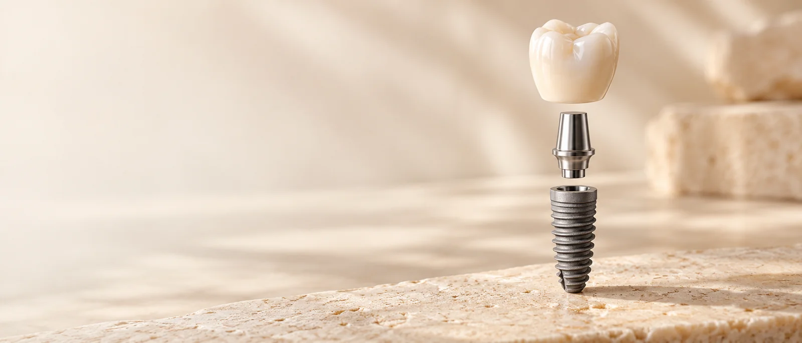
Vatan Dental Center · İzmir
İmplanttan gülüş tasarımına, ağız ve diş sağlığınızın her adımında özenli bir ekiple yanınızdayız.
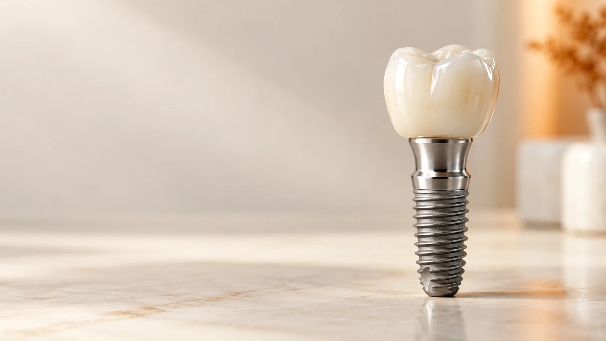
01Yapı
İmplant üç parçadan oluşur: çene kemiğine yerleşen titanyum vida, bağlantı parçası ve dışarıdan görünen kron.

02Kök
Vida, kaybedilen dişin kökü yerine çene kemiğine yerleştirilir. Üzerine tek kron, köprü ya da protez yapılabilir.
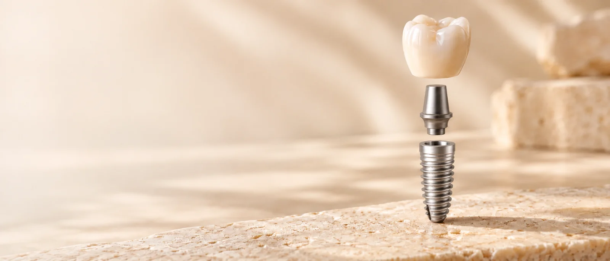
03Plan
Hekiminiz ağız ve diş eti sağlığınızı, kemik yapınızı, genel sağlık durumunuzu ve kullandığınız ilaçları değerlendirir. Gerektiğinde görüntüleme istenir.
04Yerleştirme
Uygun görülürse implant cerrahi olarak yerleştirilir. İyileşme birkaç ay ya da daha uzun sürebilir; süre kişiye göre belirlenir.
05Kron
İyileşmenin ardından üst yapı hazırlanır ve implantın üzerine yerleştirilir. Düzenli temizlik ve hekim kontrolü, implant çevresini korumanın temelidir.
Her cerrahi işlemde olduğu gibi implantta da riskler vardır. Uygunluk ve alternatifler muayenede konuşulur.
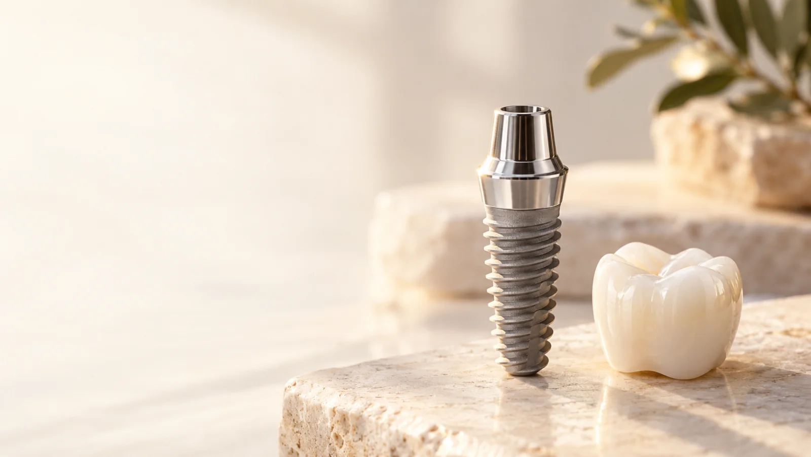
Tedavilerimiz
Ağız sağlığınız için özenli tedaviler. Hangisinin size uygun olduğu muayene ve görüntülemeyle belirlenir.
Tüm tedaviler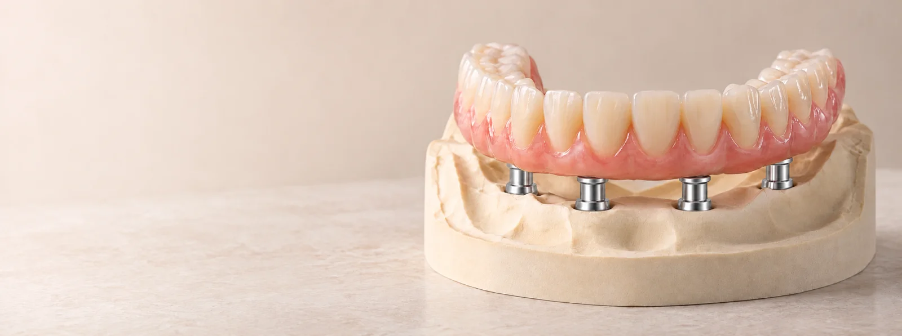
02All on Four / All on SixTüm çene için dört ya da altı implanta bağlanan protez.İncele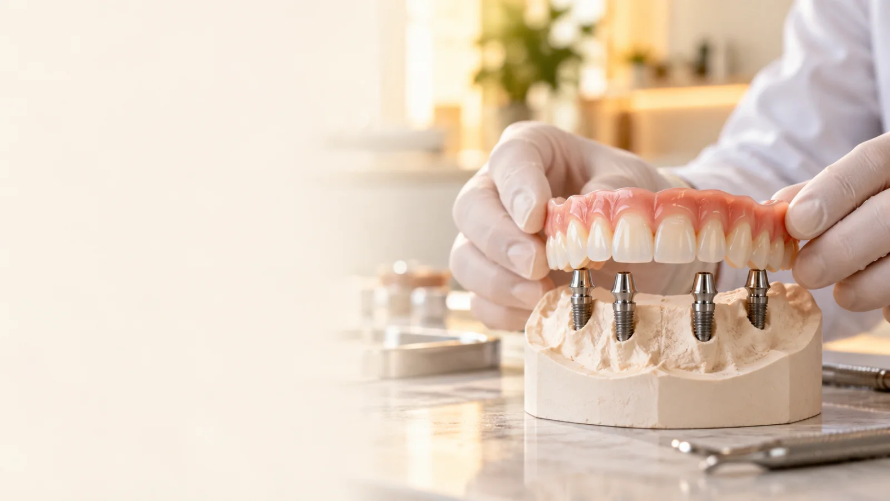
03Elmacık Kemiği İmplantıÜst çenede kemik yetersizse değerlendirilen uzun implant seçeneği.İncele 04İmplant Üstü Protezlerİmplantlara bağlanan kron, köprü ve protezler.İnceleTedavi alanlarımız
01 / 08
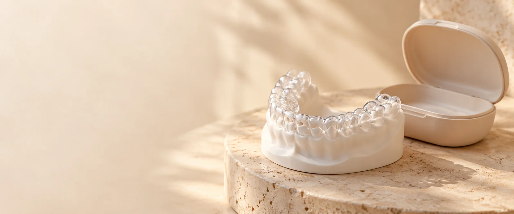
02Ortodontik Tedavi ve Şeffaf PlakDiş dizilimini ve kapanışı düzenleyen tedaviler.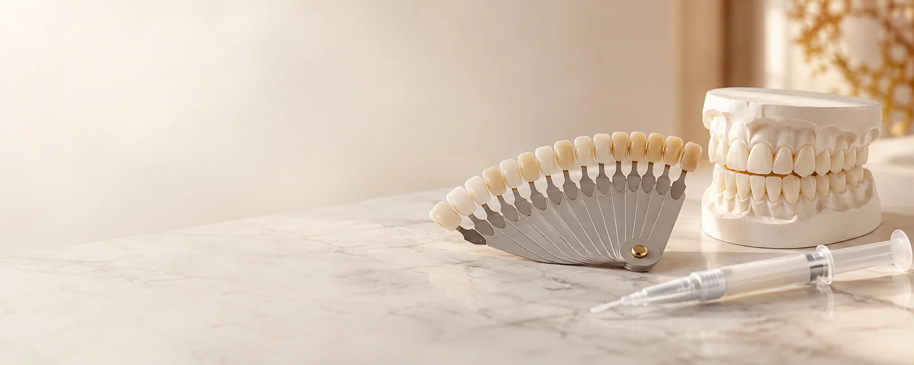
03Diş BeyazlatmaDiş renginin açılmasına yönelik uygulama.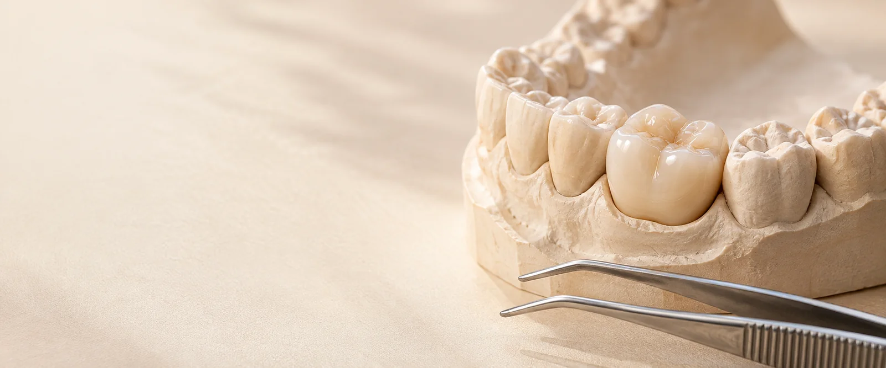
04Zirkonyum KaplamaBeyaz renkli zirkonyum malzemeyle yapılan kaplamalar.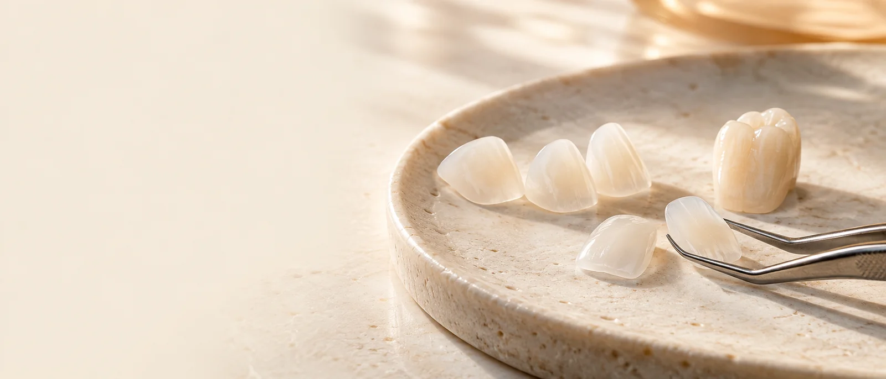
05Lamine KaplamaÖn dişlerin ön yüzüne yapıştırılan ince porselen yapraklar.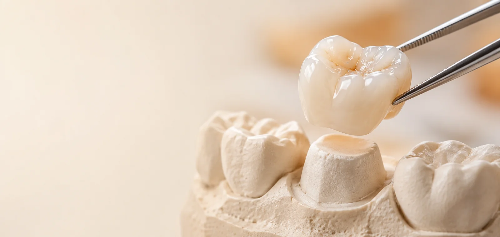
06E-MaxKaplama ve restorasyonlarda kullanılan özel bir seramik.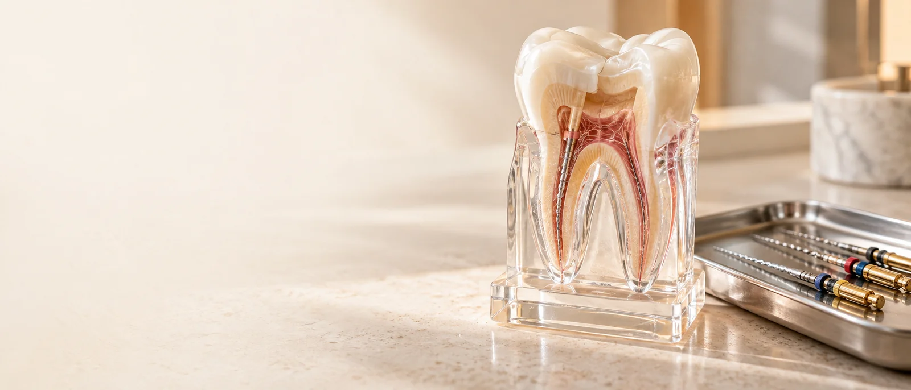
07Kanal TedavisiDişin zarar gören iç dokusunun temizlenip doldurulması.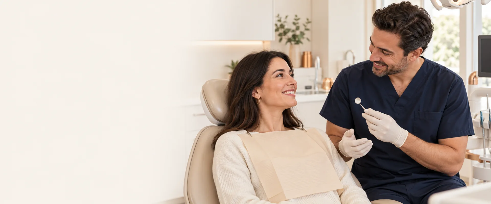
08Diş Eti TedavileriDiş etini ve çevre dokuları etkileyen hastalıkların tedavisi.24 başlık, dört grup. Bir başlığa dokunun, sayfası açılsın.
Her tedavi kişiye özeldir. Uygun seçenekler hekim muayenesi ve değerlendirmesiyle belirlenir.
Bilgi merkezi
Ağız ve diş sağlığı hakkında merak ettiklerinizi keşfedin.
Yaklaşımımız
İlgiyle dinliyor, güvenle yanınızda duruyor, birlikte gülümsüyoruz.
Vatan Dental Center
Bayraklı’daki iki şubemizde sizi ağırlıyoruz. Gelmeden önce sanal turla içeriyi gezebilir, tanıtım filmimizi izleyebilirsiniz.
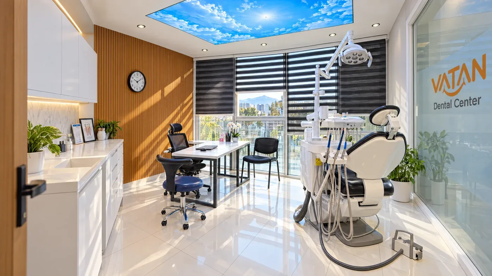
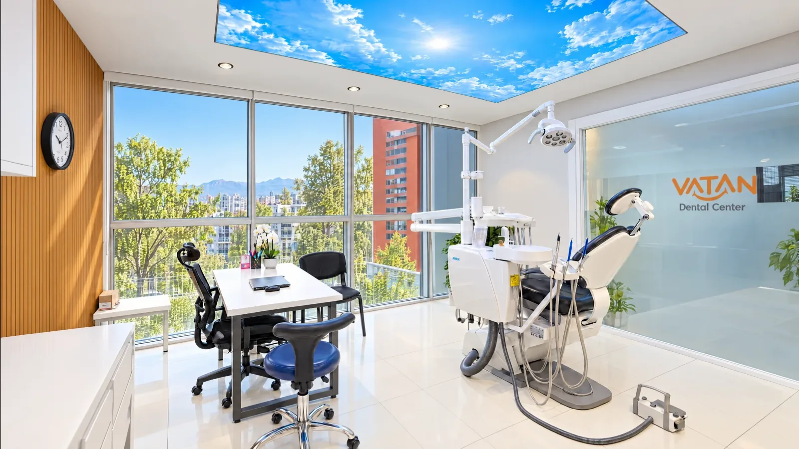
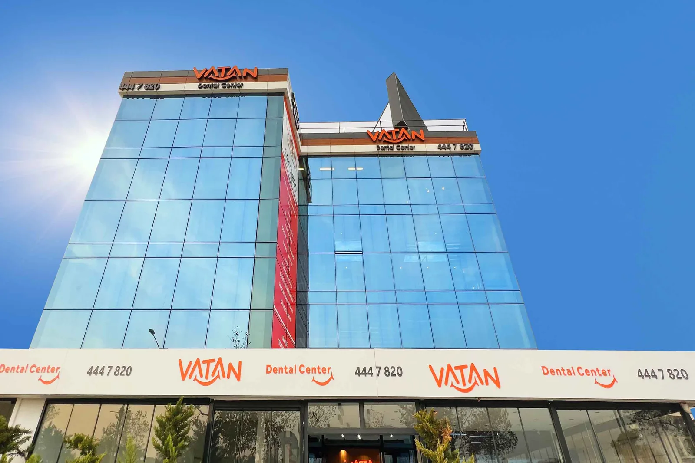
Size özel ulaşım
Ulaşım hizmetimizin kapsamını öğrenmek için bizi arayın.
444 7 820Kadromuz
Ağız ve diş sağlığınız için Vatan Dental Center’da bir aradayız.
Vatan Dental hakkında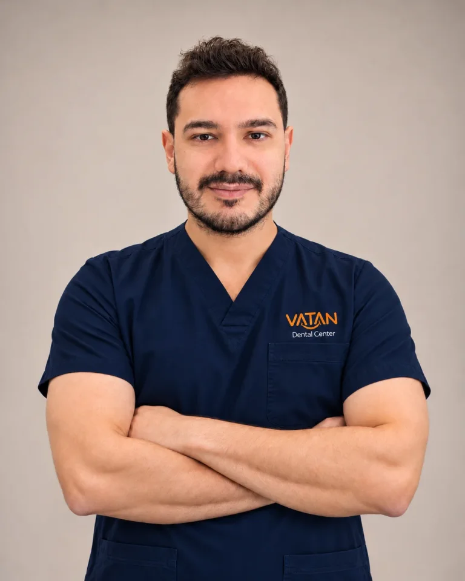
Olkan GürbüzProtetik Diş Tedavisi Uzmanı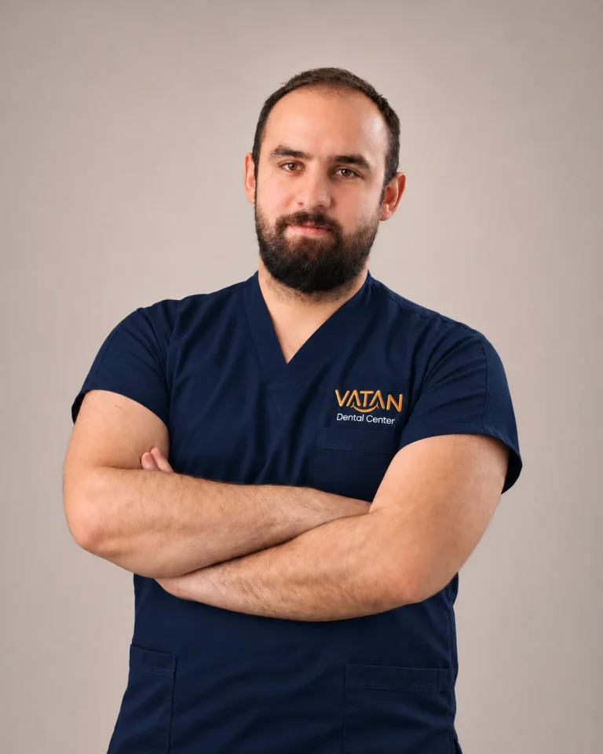
Levent AltınDiş HekimiMelek YesirciDiş Hekimi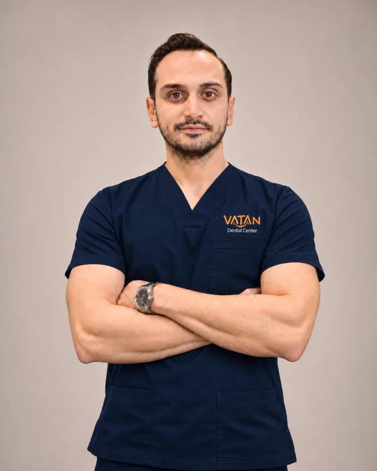
Berkay AkınDiş HekimiÖmer Eymen GülerDiş HekimiEnes Tayyip AytanDiş HekimiHasta deneyimleri
Google’da paylaşılan değerlendirmelerden kısa özetler.
Google yorumlarını görüntüleyinEkibin güler yüzünü ve verilen bilgileri beğendiğini yazıyor.
Buket O. B.Hekimine ve asistanına gösterdikleri ilgi için teşekkür ediyor.
Dilek K.Levent Bey ile Melike Hanım’ın ilgisini övüyor.
Zehra Ü.Güler yüzlü ekibe ve hekimlerine teşekkürlerini iletiyor.
Hulusi T.Ekibin yaklaşımından memnun kaldığını söylüyor.
Ebru U.Hem tedavi sürecinden hem çalışanların ilgisinden memnun kalmış.
Berrin A.Hekiminin her şeyi açıklamasını ve yaklaşımını beğenmiş.
Buse B.Hekiminin ve çalışanların ilgisine teşekkür ediyor.
Özgür İ.Karşılanmasından ve süreç boyunca bilgilendirilmesinden memnun.
Saadet E.Asya Hanım’a ve ekibe teşekkür ediyor.
Umut K.Eymen Bey’in özenli çalışmasını beğendiğini yazıyor.
Sümeyra E.Melek Hanım’ın ve çalışanların ilgisinden memnun kalmış.
Royal B.Levent Bey ile Melike Hanım’ın yaklaşımını takdir ediyor.
Ayşe İ.Hekimlerin sabırlı ve ilgili olmasından memnun.
Selim S.Doktorların ve ekibin yaklaşımını beğenmiş.
Yusuf A.Eymen Bey’e teşekkür ediyor, kliniği tavsiye ediyor.
Ahmetİletişim
Sorularınız ve randevu talepleriniz için bizimle iletişime geçebilirsiniz.
Tercihlerinizi hatırlamak için tarayıcı depolaması kullanıyoruz. İzin verirseniz harita, video ve sanal tur içerikleri yüklenebilir. Çerez politikası